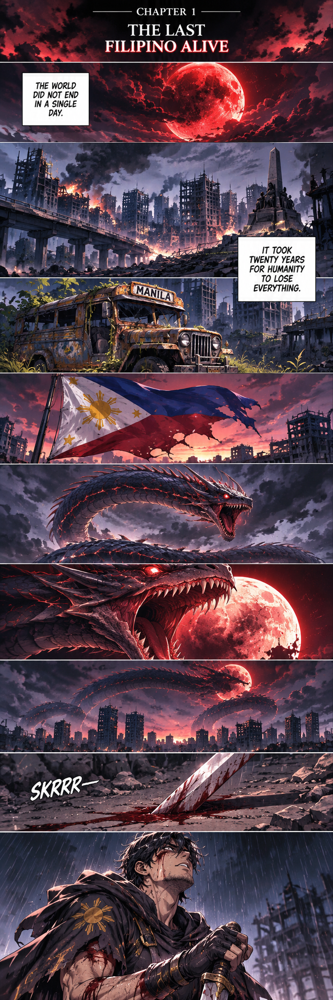
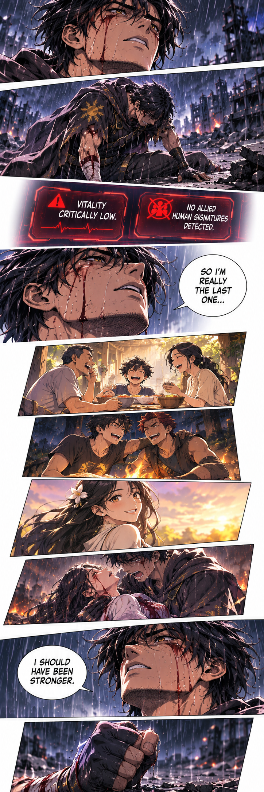
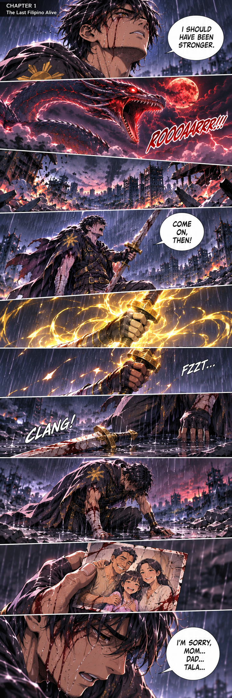

ORIGINAL FILIPINO DARK FANTASY WEBTOON
THE LAST
MAHARLIKA
Regression of the Forgotten God
He watched the gods destroy his world. Twenty years later, he has seven days to change its fate.
AWAKENINGREGRESSIONPHILIPPINE MYTHOLOGY
SEASON ONE
Chapter library
300 planned chapters · 1 in progress
VERTICAL SCROLL · MOBILE FRIENDLY
Chapter 1 — The Last Filipino Alive
In production · illustrated strips 1–3 of 5



CHAPTER 1 · CONTINUES
Panels 31–50 are not illustrated yet. This is a work-in-progress preview, not a finished chapter.
THE UNIVERSE
The gods remember. He remembers more.
Alon Reyes, a Filipino survivor of a world consumed by supernatural gates, awakens twenty years in the past. Armed with knowledge of the apocalypse, he confronts monsters from Philippine folklore, corrupt awakened factions, and forgotten gods. The comic is an original fantasy adaptation, not a documentary portrayal of Filipino folklore.
300Chapters planned
15Major arcs
50Panels per chapter